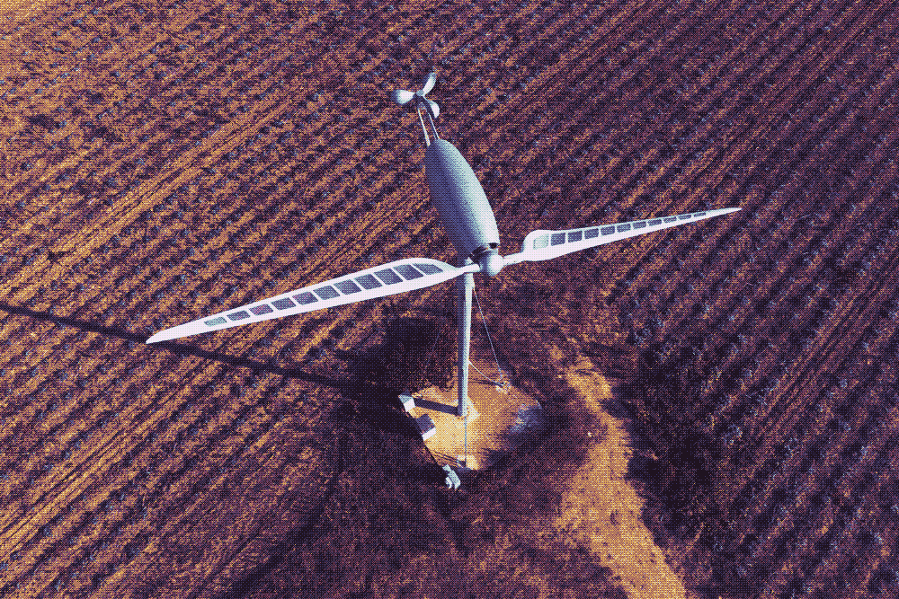

Renzo Piano est un architecte italien qui a pensé ces éoliennes bipales inspirées de LIBELLULES avec pour objectif de rendre les villes plus autonomes en matière d’énergie.
La Dragonfly est en pvc et elle est bien plus légère qu’une éolienne normale. Sa légèreté lui permet de mettre ses pales en rotation avec un minimum de vent et donc de fournir plus d'énergie.
C’est parce que les libellules sont connues pour résister aux vents violents qu’il les a pris comme muses de ce projet.
Généralement, les éoliennes traditionnelles causent des problèmes au niveau de la population voisine qui cherche à s’en débarrasser pour des causes de pollution visuelle et sonore mais ces éoliennes bipales, ont réussi à convaincre grâce à leur discrétion et à la manière dont elles se fondent dans le paysage.
